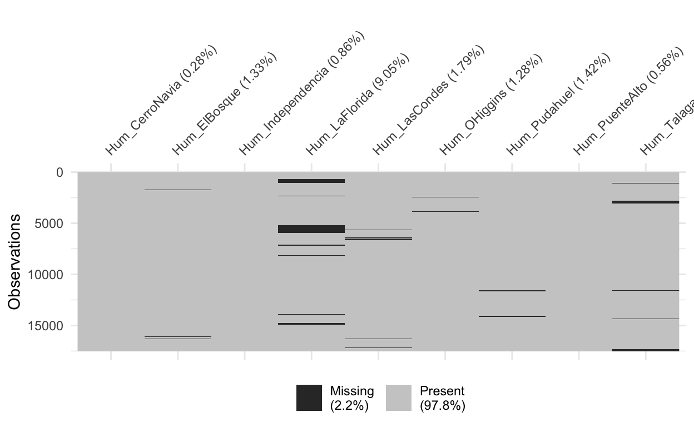
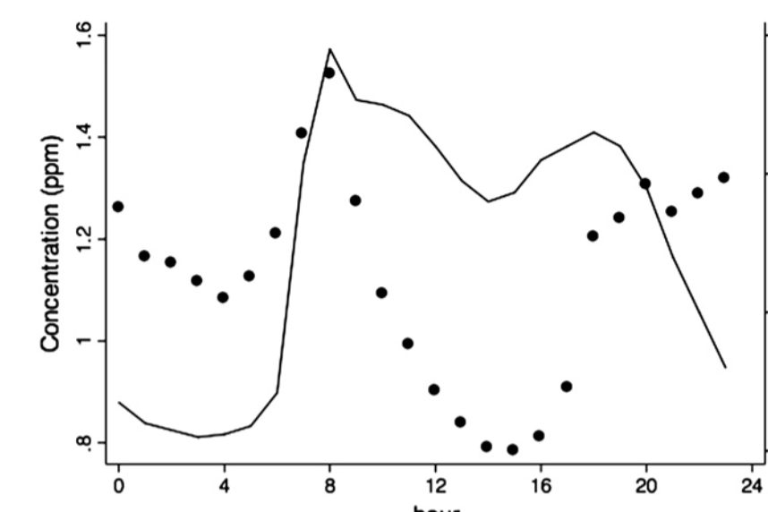
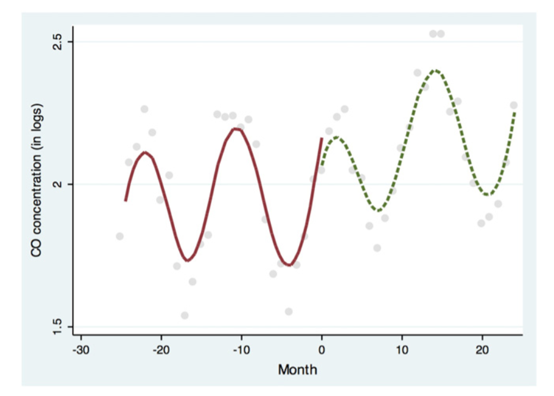
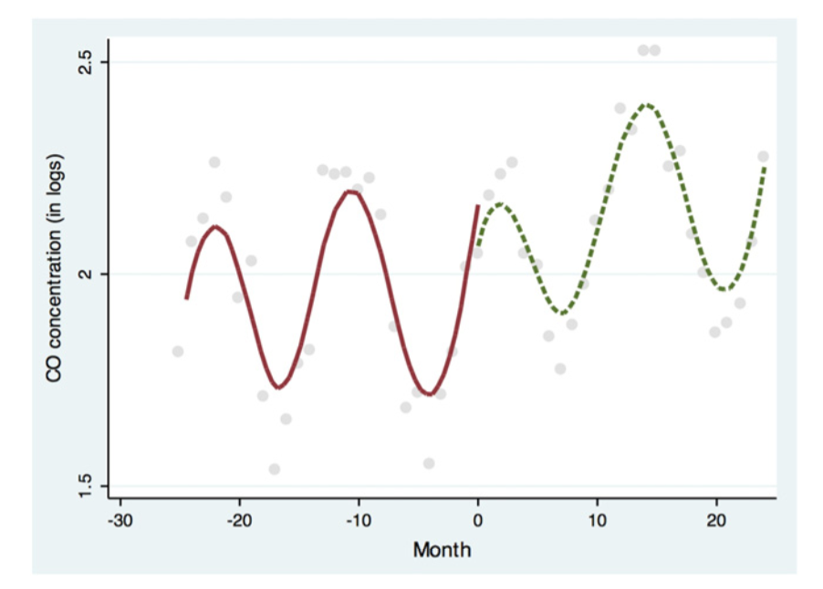

knitr::opts_chunk$set(echo = TRUE)Recopilación de Datos
Como se discutió en las publicaciones anteriores, trataremos con 3 tipos de datos:
- Datos de series temporales de concentraciones de CO (variable dependiente) y SO2;
- Datos de series de tiempo de las condiciones climáticas (velocidad del viento, dirección del viento, humedad relativa y temperatura);
- Datos de ubicación tanto de las estaciones de monitoreo como de las estaciones de Bike Itaú.
Todos estos datos fueron recolectados manualmente. Del Sistema de Información Nacional de la Calidad del Aire (SINCA), disponible en https://sinca.mma.gob.cl/index.php/region/index/id/M, fue posible recopilar todos los datos sobre la estaciones de monitoreo (todos los datos de series de tiempo). Esta información se recopiló en archivos .csv individuales de 9 de 14 estaciones, ya que solo estas 9 tenían datos para el período de tiempo previsto (2018 - 2020), lo que nos deja un total de 49 archivos, 1 archivo por estación de monitoreo (9 ) por variable (6), a excepción de los datos de SO2, que solo estaban disponibles para el período de tiempo previsto en 4 estaciones (\(9 \cdot 5 + 4 = 49\)). Estos archivos están disponibles en _assets/Data en el repositorio de GitHub de este proyecto.
En cuanto a los datos de ubicación, se creó un archivo de Excel independiente con 2 hojas, la primera con los nombres y ubicaciones (en tipo UTM) de las estaciones de monitoreo (recolectadas de SINCA), y la segunda hoja con los ID’s, capacidad y coordenadas (latitud y longitud) de cada estación de bicicletas compartidas en Santiago (todas pertenecientes a Bike Itaú). Para esta última información se utilizó Google Maps, lo que me permitió recopilar información de 118 estaciones.
Preparación de los Datos
La preparación de los datos requiere los siguientes pasos:
- Filtrado de los conjuntos de datos para el período comprendido entre el 02-01-2018 y el 02-01-2020 (exactamente un año antes y después de la renovación del sistema de Bike Itaú);
- Fusionar todos los conjuntos de datos en uno solo, con diferentes valores de indicador en diferentes columnas;
- Validar las conclusiones de artículos anteriores sobre los mejores plazos para analizar la concentración de CO (por ejemplo, las dos horas consecutivas que en promedio marcan las lecturas más altas de CO en la muestra de dos años);
- Filtre el conjunto de datos para esas horas (7 a. m. a 9 a. m.);
- Agregue valores para la contaminación de fondo antes de que se forme el pico y considere el promedio de 4 registros de CO consecutivos que, en promedio, mostraron la menor dispersión en el transcurso de la muestra (1 a. m. a 5 a. m.)
- Construir las variables ficticias que identifican las observaciones posteriores a la implementación, así como el indicador del mes;
- Pupular con variables para día de la semana, hora del día y mes del año (dummies)
Sobre los datos de ubicación, se requiere: 1. Uniformizar los tipos de datos de ubicación; 2. Calcule las distancias lineales entre cada estación de monitoreo y todas las estaciones de bicicletas, y sume dichas distancias
EDA (Exploratory Data Analysis)
Vejamos los datos:
library(stringr)
library(dplyr)
library(knitr)
emissions <- c( 'SO2', 'CO')
weather <- c('WindSpeed', 'Temp', 'Hum')
for (item in c(weather, emissions)) {
data <- read.csv(str_glue('{params$datapath}{item}_PuenteAlto.csv'), header = TRUE, sep = ';')
show(data[1:5,])
} FECHA..YYMMDD. HORA..HHMM. X X.1
1 90124 100 NA
2 90124 200 NA
3 90124 300 NA
4 90124 400 NA
5 90124 500 NA
FECHA..YYMMDD. HORA..HHMM. X X.1
1 90124 100 NA
2 90124 200 NA
3 90124 300 NA
4 90124 400 NA
5 90124 500 NA
FECHA..YYMMDD. HORA..HHMM. X X.1
1 40101 100 NA
2 40101 200 NA
3 40101 300 NA
4 40101 400 NA
5 40101 500 NA
FECHA..YYMMDD. HORA..HHMM. Registros.validados
1 90125 100 1
2 90125 200 1
3 90125 300 1
4 90125 400 1
5 90125 500 1
Registros.preliminares Registros.no.validados X
1 NA
2 NA
3 NA
4 NA
5 NA
FECHA..YYMMDD. HORA..HHMM. Registros.validados
1 90125 100 2,8
2 90125 200 2,7
3 90125 300 2,9
4 90125 400 2,6
5 90125 500 2,5
Registros.preliminares Registros.no.validados X
1 NA
2 NA
3 NA
4 NA
5 NALimpiar la base CO y filtrar para las fechas que queremos
# Rename, drop colunms and change string to numeric
data <- read.csv(str_glue('{params$datapath}CO_PuenteAlto.csv'), header = TRUE, sep = ';')
data <- data %>%
rename("Date_YYMMDD" = "FECHA..YYMMDD.",
"Time_HHMM" = "HORA..HHMM.",
"CO" = "Registros.validados") %>%
select(-Registros.preliminares, -Registros.no.validados, -X) %>%
mutate(CO = as.numeric(gsub(",", ".", CO)))
# Drops unwanted years (before 01 Feb 18 and on or after 01 Feb 2020)
data <- data[data$Date_YYMMDD >= params$start_date & data$Date_YYMMDD < params$end_date, ]
# Veryfy if all days and all hours exist
if (length(data$Date_YYMMDD) == as.numeric(difftime('2020-01-02', '2018-01-02', units = "days")) * 24) {
cat("All observations exist! :)")
} else {
cat("Missing observations... Look out! :(")
}All observations exist! :)show(data[1:5,]) Date_YYMMDD Time_HHMM CO
79056 180201 0 0.14
79057 180201 100 0.17
79058 180201 200 0.20
79059 180201 300 0.24
79060 180201 400 0.19Juntar todas las bases CO & SO2
# Search for CO files
files <- list.files(path=params$datapath, pattern=str_glue("*.csv"), full.names=TRUE, recursive=FALSE)
dataset <- data %>%
select(-CO)
dataset$index <- 1:nrow(dataset)
# Iterate each file name
bad_dfs <- list()
counter <- 0
for (file in files) {
file_pattern <- sub(str_glue('{params$datapath}/'), '', file)
file_pattern <- sub('_.*', '', file_pattern)
# Extract station name
station <- sub(str_glue(".*{file_pattern}_"), "", file)
station <- sub(".csv.*", "", station)
col_name <- as.character(str_glue("{file_pattern}_{station}"))
# Create dataframe
df <- read.csv(file, header = TRUE, sep = ';')
# Clean dataframe
if (file_pattern %in% emissions ) {
df <- df %>%
mutate(Registros.validados := as.numeric(gsub(",", ".", Registros.validados))) %>%
rename("Date_YYMMDD" = "FECHA..YYMMDD.",
"Time_HHMM" = "HORA..HHMM.",
!!col_name := "Registros.validados") %>%
select(-Registros.preliminares, -Registros.no.validados, -X)
} else {
df <- df %>%
mutate(X := as.numeric(gsub(",", ".", X))) %>%
rename("Date_YYMMDD" = "FECHA..YYMMDD.",
"Time_HHMM" = "HORA..HHMM.",
!!col_name := "X") %>%
select(-X.1)
}
# Drops unwanted years (before 01 Feb 18 and on or after 01 Feb 2020)
df <- df[df$Date_YYMMDD >= params$start_date & df$Date_YYMMDD < params$end_date, ]
# Veryfy if all days and all hours exist
if (length(df$Date_YYMMDD) != as.numeric(difftime('2020-01-02', '2018-01-02', units = "days")) * 24) {
bad_dfs[counter] <- station
}
# Merge df with orginal data
dataset <- merge(dataset, df, by = c('Date_YYMMDD', 'Time_HHMM'), all = TRUE)
}
if (counter > 0) {
cat("Some observations don't exist ... Lookout for the following datasets:", bad_dfs)
} else {
cat("All observations exist! :)")
}All observations exist! :)summary(dataset) Date_YYMMDD Time_HHMM index CO_CerroNavia
Min. :180201 Min. : 0 Min. : 1 Min. :0.1000
1st Qu.:180802 1st Qu.: 575 1st Qu.: 4381 1st Qu.:0.2500
Median :190166 Median :1150 Median : 8760 Median :0.4800
Mean :186518 Mean :1150 Mean : 8760 Mean :0.8151
3rd Qu.:190802 3rd Qu.:1725 3rd Qu.:13140 3rd Qu.:0.8800
Max. :200131 Max. :2300 Max. :17520 Max. :9.7500
NA's :2021
CO_ElBosque CO_Independencia CO_LaFlorida CO_LasCondes
Min. :0.1000 Min. :0.1000 Min. :0.100 Min. :0.1000
1st Qu.:0.2300 1st Qu.:0.2300 1st Qu.:0.260 1st Qu.:0.2800
Median :0.4300 Median :0.4000 Median :0.430 Median :0.3800
Mean :0.7116 Mean :0.5866 Mean :0.554 Mean :0.4605
3rd Qu.:0.8100 3rd Qu.:0.7500 3rd Qu.:0.760 3rd Qu.:0.5800
Max. :6.8500 Max. :4.7100 Max. :2.130 Max. :2.4700
NA's :2597 NA's :2612 NA's :16844 NA's :1837
CO_OHiggins CO_Paduhuel CO_PuenteAlto CO_Talagante
Min. :0.1000 Min. :0.110 Min. :0.1000 Min. :0.100
1st Qu.:0.3600 1st Qu.:0.398 1st Qu.:0.2400 1st Qu.:0.110
Median :0.5100 Median :0.660 Median :0.4200 Median :0.210
Mean :0.7629 Mean :0.847 Mean :0.5997 Mean :0.376
3rd Qu.:0.8700 3rd Qu.:1.060 3rd Qu.:0.7200 3rd Qu.:0.440
Max. :7.2400 Max. :4.970 Max. :5.7600 Max. :3.690
NA's :841 NA's :16844 NA's :3013 NA's :4068
Hum_CerroNavia Hum_ElBosque Hum_Independencia
Min. : 4.583 Min. : 5.167 Min. : 6.00
1st Qu.:38.501 1st Qu.:37.507 1st Qu.: 37.00
Median :57.750 Median :55.675 Median : 53.08
Mean :57.423 Mean :55.010 Mean : 53.87
3rd Qu.:76.417 3rd Qu.:72.689 3rd Qu.: 70.33
Max. :99.028 Max. :97.016 Max. :100.01
NA's :49 NA's :233 NA's :150
Hum_LaFlorida Hum_LasCondes Hum_OHiggins
Min. : 4.667 Min. : 2.167 Min. : 6.167
1st Qu.: 37.667 1st Qu.:37.583 1st Qu.: 39.417
Median : 55.011 Median :55.342 Median : 57.171
Mean : 54.852 Mean :54.885 Mean : 57.033
3rd Qu.: 71.861 3rd Qu.:71.845 3rd Qu.: 74.173
Max. :100.016 Max. :99.500 Max. :100.167
NA's :1586 NA's :314 NA's :225
Hum_Pudahuel Hum_PuenteAlto Hum_Talagante SO2_ElBosque
Min. : 5.667 Min. : 7.251 Min. : 11.67 Min. : 1.000
1st Qu.:39.583 1st Qu.: 38.839 1st Qu.: 49.84 1st Qu.: 1.000
Median :58.667 Median : 54.346 Median : 71.42 Median : 1.000
Mean :58.157 Mean : 55.376 Mean : 67.92 Mean : 1.131
3rd Qu.:77.000 3rd Qu.: 71.776 3rd Qu.: 87.35 3rd Qu.: 1.060
Max. :99.912 Max. :100.028 Max. :100.17 Max. :15.860
NA's :248 NA's :98 NA's :520 NA's :655
SO2_LaFlorida SO2_PuenteAlto SO2_Talgante Temp_CerroNavia
Min. : 1.000 Min. : 1.000 Min. :1.000 Min. :-2.267
1st Qu.: 1.270 1st Qu.: 2.020 1st Qu.:1.310 1st Qu.: 9.933
Median : 1.790 Median : 3.220 Median :2.060 Median :14.717
Mean : 2.004 Mean : 3.004 Mean :2.028 Mean :15.562
3rd Qu.: 2.450 3rd Qu.: 3.570 3rd Qu.:2.390 3rd Qu.:20.638
Max. :16.780 Max. :26.150 Max. :9.640 Max. :37.591
NA's :6999 NA's :262 NA's :2378 NA's :50
Temp_ElBosque Temp_Independencia Temp_LaFlorida
Min. :-3.317 Min. : 0.5334 Min. :-1.609
1st Qu.: 8.659 1st Qu.:11.3111 1st Qu.: 9.717
Median :13.484 Median :15.9517 Median :15.142
Mean :14.285 Mean :16.5695 Mean :15.749
3rd Qu.:19.467 3rd Qu.:21.3171 3rd Qu.:21.167
Max. :35.828 Max. :36.7449 Max. :37.570
NA's :232 NA's :164 NA's :2835
Temp_LasCondes Temp_OHiggins Temp_Pudahuel Temp_PuenteAlto
Min. :-1.350 Min. :-2.15 Min. :-1.992 Min. :-1.067
1st Qu.: 9.958 1st Qu.:10.46 1st Qu.:10.430 1st Qu.:10.142
Median :14.495 Median :15.18 Median :15.092 Median :14.775
Mean :15.195 Mean :15.96 Mean :15.838 Mean :15.337
3rd Qu.:20.076 3rd Qu.:21.05 3rd Qu.:20.818 3rd Qu.:20.167
Max. :35.386 Max. :37.57 Max. :37.083 Max. :35.911
NA's :791 NA's :53 NA's :1121 NA's :95
Temp_Talagante WindSpeed_CerroNavia WindSpeed_ElBosque
Min. :-1.400 Min. :0.0043 Min. :0.006
1st Qu.: 9.873 1st Qu.:0.3572 1st Qu.:0.395
Median :13.520 Median :0.8337 Median :0.707
Mean :15.100 Mean :1.1626 Mean :1.054
3rd Qu.:19.797 3rd Qu.:1.7394 3rd Qu.:1.495
Max. :39.100 Max. :5.6059 Max. :4.848
NA's :509 NA's :1020 NA's :4364
WindSpeed_Independencia WindSpeed_LaFlorida WindSpeed_LasCondes
Min. :0.00161 Min. :0.0042 Min. :0.003
1st Qu.:0.38765 1st Qu.:0.3475 1st Qu.:0.472
Median :0.70798 Median :0.6024 Median :0.991
Mean :0.88137 Mean :0.7760 Mean :1.261
3rd Qu.:1.23190 3rd Qu.:1.0096 3rd Qu.:1.710
Max. :3.53790 Max. :3.9285 Max. :8.711
NA's :146 NA's :1518 NA's :5441
WindSpeed_OHiggins WindSpeed_Pudahuel WindSpeed_PuenteAlto
Min. :0.00168 Min. :0.0039 Min. :0.0036
1st Qu.:0.32310 1st Qu.:0.4172 1st Qu.:0.5860
Median :0.68129 Median :0.9507 Median :0.9611
Mean :0.96645 Mean :1.2530 Mean :1.3838
3rd Qu.:1.41514 3rd Qu.:1.8794 3rd Qu.:1.8824
Max. :4.21275 Max. :4.9803 Max. :6.6712
NA's :143 NA's :973 NA's :2514
WindSpeed_Talagante
Min. :0.0031
1st Qu.:0.3131
Median :0.6853
Mean :0.8831
3rd Qu.:1.2193
Max. :4.6481
NA's :828 Datos no incluidos
vis_miss(dataset %>% select(starts_with('SO2')))vis_miss(dataset %>% select(starts_with('WindSpeed')))vis_miss(dataset %>% select(starts_with('Temp')))vis_miss(dataset %>% select(starts_with('Hum')))
Las estaciones de monitoreo de La Florida y Paduhel no tienen datos suficientes para analisis, por lo tanto se eliminará estas estaciones. Para las seguientes, se van usar estrategias de inputación de datos.
dataset <- dataset %>% select(-ends_with('LaFlorida'))
dataset <- dataset %>% select(-ends_with('Paduhuel'))
vis_miss(dataset %>% select(starts_with('CO')))vis_miss(dataset %>% select(starts_with('SO2')))vis_miss(dataset %>% select(starts_with('WindSpeed')))vis_miss(dataset %>% select(starts_with('Temp')))vis_miss(dataset %>% select(starts_with('Hum')))KNN Imputation …
Visualizaciones previstas
El principal interés de las visualizaciones es investigar el comportamiento de la variable dependiente (CO), con el fin de validar cómo se construye el modelo. Por lo tanto, el objetivo es crear visualizaciones como estas:
  

Además, los outliers deben estudiarse a través de boxplots para emisiones y variables climáticas, y, las correlaciones entre estos también deben estudiarse gráficamente.